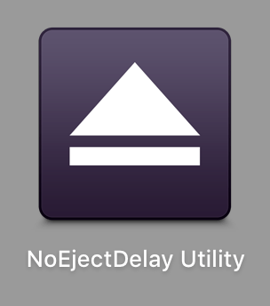

NoEjectDelay
- NoEjectDelay eliminates the eject key delay.
-
NoEjectDelay disables F12Eject feature.
(Fix peculiar behavior of f12 key in non-Apple keyboards.)
Download NoEjectDelay-7.1.0 For macOS 10.11

old versions and version history
Download NoEjectDelay-6.1.0 For macOS 10.10, 10.9
Download NoEjectDelay-5.4.0 For macOS 10.8
Download NoEjectDelay-4.1.0 For macOS 10.7
Installation
Step 1
Open a downloaded dmg file, and then open a pkg file in dmg.


Usage
No configuration required.
NoEjectDelay becomes effective immediately after installation has completed.
How to know the installed version
You can confirm NoEjectDelay version by "NoEjectDelay Utility.app".
-
Open "NoEjectDelay Utility" from Launchpad.

-
Then, you can confirm the version.
Uninstall
You can uninstall NoEjectDelay by "NoEjectDelay Utility.app".
-
Open "NoEjectDelay Utility" from Launchpad.
-
Then, press "Launch uninstaller" button.
Q&A
NoEjectDelay does not work on developer-only beta of macOS. Why?
We need to modify secret values of macOS to performs purpose of NoEjectDelay.
It requires SDK for new macOS.
However, SDK will not be published until new macOS is shipped.
Therefore, NoEjectDelay is intentionally disabled on beta version of macOS.
Please wait until new macOS is shipped from Apple. And please wait new version of NoEjectDelay for new macOS.
Version History
Version 7.1.0 Feb 29, 2016 Download
Version 7.0.0 Oct 3, 2015 Download
Version 6.1.0 Jun 9, 2015 Download
- macOS 10.11 has been supported.
Version 6.0.0 Nov 1, 2014 Download
- macOS 10.10 has been supported.
- macOS 10.8 support has been dropped.
Version 5.4.0 Feb 27, 2014 Download
-
Fixed an issue:
- NoEjectDelay causes kernel panic on macOS 10.9.2.
Version 5.3.0 Dec 1, 2013 Download
- NoEjectDelay no longer requires system restart at installing or upgrading.
Version 5.2.0 Nov 10, 2013 Download
- Signed kext with Developer ID.
- Updated installer.
Version 5.0.0 Oct 20, 2013 Download
- Supported macOS 10.9.
- Signed with Developer ID.
Version 4.1.0 Jan 13, 2013 Download
- Fixed a minor issue in the installer.
Version 4.0.0 Aug 5, 2012 Download
- Update for macOS 10.8 Mountain Lion.
Version 3.6.0 Aug 5, 2012 Download
- Added "Disable F12Eject" feature.
Version 3.4.0 Apr 24, 2012 Download
- Changed package archive format to dmg from zip.
Version 3.3.0 Feb 21, 2012 Download
- Updated source code for Xcode 4.3.
Version 3.2.0 Oct 26, 2011 Download
- Resolved a minor installer issue.
Version 3.1.0 Aug 16, 2011 Download
- Fixed a minor issue on Mac macOS 10.7.
Version 3.0.0 Jul 23, 2011 Download
- Update for Mac macOS 10.7 Lion.
Version 2.1.0 May 11, 2010 Download
- Fixed a minor bug.
Version 2.0.0 Sep 13, 2009 Download
- Stable release for Snow Leopard.
Version 1.1.0 May 26, 2008 Download
- Minor Improvements.
Version 1.0.0 May 7, 2008 Download
- Initial release.